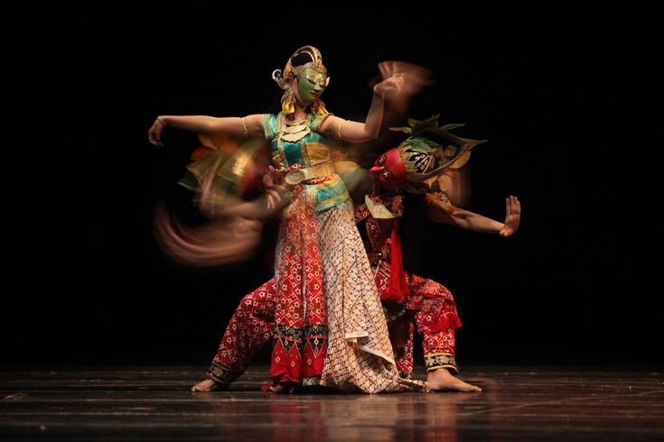
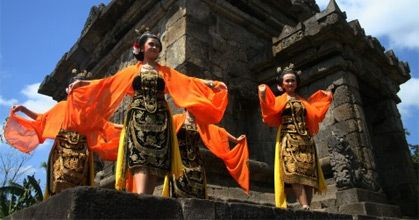
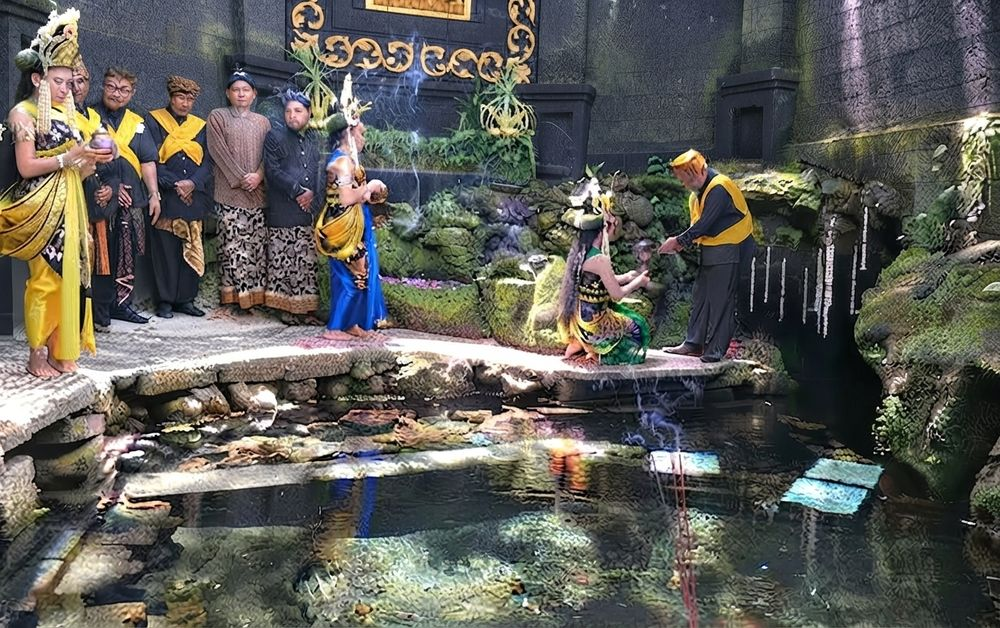

Topeng Malangan
Ukiran topeng kayu khas Malang yang menjadi wajah tari Wayang Topeng, tiap warna dan bentuk menggambarkan karakter berbeda.

Wayang Topeng Malang
Seni pertunjukan tari bertopeng yang mengisahkan lakon Panji, salah satu tradisi tertua yang masih dilestarikan di Malang.

Candi Singosari
Peninggalan Kerajaan Singasari abad ke-13, saksi bisu kejayaan Malang sebagai pusat kekuasaan di Jawa Timur.

Candi Badut
Candi tertua di Malang, diperkirakan berdiri sejak abad ke-8 pada masa Kerajaan Kanjuruhan.

Kesenian Bantengan
Tarian rakyat bernuansa mistis yang menampilkan sosok banteng, populer di lereng pegunungan sekitar Malang.

Batik Malangan
Batik dengan motif khas seperti Kembang Kertas dan Teratai Sedunia, mencerminkan identitas visual masyarakat Malang.

Tari Beskalan
Tarian penyambutan tradisional yang biasa dipentaskan pada upacara adat dan penyambutan tamu kehormatan.

Upacara Adat Malangan
Ragam ritual dan selamatan yang masih dijalankan masyarakat sebagai wujud syukur dan penghormatan leluhur.
Kotak putus-putus adalah slot foto — unggah gambar aslinya untuk menggantikan placeholder.